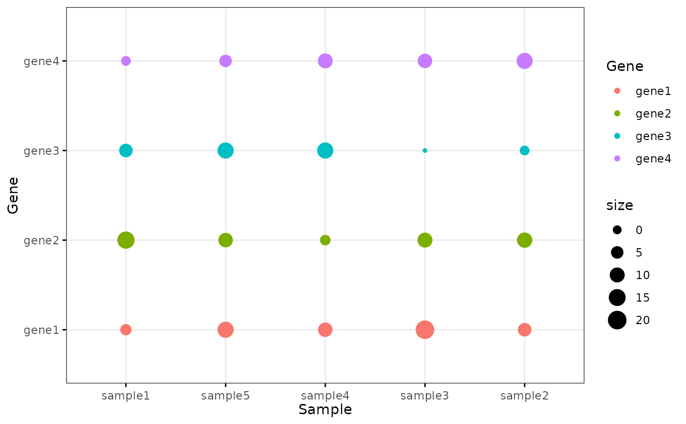

Bior_DotPlot.RdCreate a dot plot.
Bior_DotPlot(
data,
x,
y,
group = NULL,
combine = FALSE,
color = "black",
palette = NULL,
shape = 19,
size = NULL,
dot.size = size,
sorting = c("ascending", "descending", "none"),
x.text.col = TRUE,
rotate = FALSE,
title = NULL,
xlab = NULL,
ylab = NULL,
facet.by = NULL,
panel.labs = NULL,
short.panel.labs = TRUE,
select = NULL,
remove = NULL,
order = NULL,
label = NULL,
font.label = list(size = 11, color = "black"),
label.select = NULL,
repel = FALSE,
label.rectangle = FALSE,
position = "identity",
ggtheme = theme_pubr(),
...
)a data frame
x and y variables for drawing.
an optional column name indicating how the elements of x are grouped.
logical value. Default is FALSE. Used only when y is a vector containing multiple variables to plot. If TRUE, create a multi-panel plot by combining the plot of y variables.
points color and size.
the color palette to be used for coloring or filling by groups. Allowed values include "grey" for grey color palettes; brewer palettes e.g. "RdBu", "Blues", ...; or custom color palette e.g. c("blue", "red"); and scientific journal palettes from ggsci R package, e.g.: "npg", "aaas", "lancet", "jco", "ucscgb", "uchicago", "simpsons" and "rickandmorty".
point shape. See show_point_shapes.
numeric value specifying the dot size.
a character vector for sorting into ascending or descending order. Allowed values are one of "descending", "ascending" and "none". Partial match are allowed (e.g. sorting = "desc" or "asc"). Default is "descending".
logical. If TRUE (default), x axis texts are colored by groups.
logical value. If TRUE, rotate the graph by setting the plot orientation to horizontal.
plot main title.
character vector specifying x axis labels. Use xlab = FALSE to hide xlab.
character vector specifying y axis labels. Use ylab = FALSE to hide ylab.
character vector, of length 1 or 2, specifying grouping variables for faceting the plot into multiple panels. Should be in the data.
a list of one or two character vectors to modify facet panel labels. For example, panel.labs = list(sex = c("Male", "Female")) specifies the labels for the "sex" variable. For two grouping variables, you can use for example panel.labs = list(sex = c("Male", "Female"), rx = c("Obs", "Lev", "Lev2") ).
logical value. Default is TRUE. If TRUE, create short labels for panels by omitting variable names; in other words panels will be labelled only by variable grouping levels.
character vector specifying which items to display.
character vector specifying which items to remove from the plot.
character vector specifying the order of items.
the name of the column containing point labels.
a list which can contain the combination of the following elements: the size (e.g.: 14), the style (e.g.: "plain", "bold", "italic", "bold.italic") and the color (e.g.: "red") of labels. For example font.label = list(size = 14, face = "bold", color ="red"). To specify only the size and the style, use font.label = list(size = 14, face = "plain").
can be of two formats:
a character vector specifying some labels to show.
a list containing one or the combination of the following components:
top.up and
top.down: to display the labels of the top up/down points. For
example, label.select = list(top.up = 10, top.down = 4).
criteria: to filter, for example, by x and y variabes values, use
this: label.select = list(criteria = "`y` > 2 & `y` < 5 & `x` %in%
c('A', 'B')").
a logical value, whether to use ggrepel to avoid overplotting text labels or not.
logical value. If TRUE, add rectangle underneath the text, making it easier to read.
Position adjustment, either as a string, or the result of a call to a position adjustment function.
function, ggplot2 theme name. Default value is theme_pubr(). Allowed values include ggplot2 official themes: theme_gray(), theme_bw(), theme_minimal(), theme_classic(), theme_void(), ....
other arguments to be passed to geom_point
and ggpar.
A ggplot object
# Examples 1
df <- data.frame(
Sample = rep(paste('sample', 1:5, sep=''), 4),
Gene = rep(paste('gene', 1:4, sep=''), 5),
size = round(rnorm(20, mean = 10, sd = 5))
)
colour <- c("#1F77B4FF","#FF7F0EFF","#2CA02CFF","#D62728FF","#9467BDFF")
Bior_DotPlot(data = df, x = "Sample", y = "Gene", size = "size", color = "Gene",
x.text.col = FALSE, ggtheme = theme_bw()) +
theme(axis.text.x = element_text(angle = 0, hjust = 0.5))

# Examples 2
df <- data.frame(
Sample = rep(paste('sample', 1:4, sep=''), each=4),
Gene = rep(paste('gene', 1:4, sep=''), 4),
Pct = c(80,10,10,10,10,80,10,10,10,10,80,10,10,10,10,80),
Expression = c(3,0.5,0.1,0.3,0.3,3,0.2,0.6,0.1,0.7,3,0.1,0.5,0.2,0.1,3)
)
Bior_DotPlot(data = df, x = "Sample", y = "Gene", size="Pct", color = "Expression",
x.text.col = FALSE, ggtheme = theme_bw()) +
theme(axis.text.x = element_text(angle = 0, hjust = 0.5)) +
scale_color_gradientn(colours = c("lightblue3", "lightblue", "white", "red", "red4"))